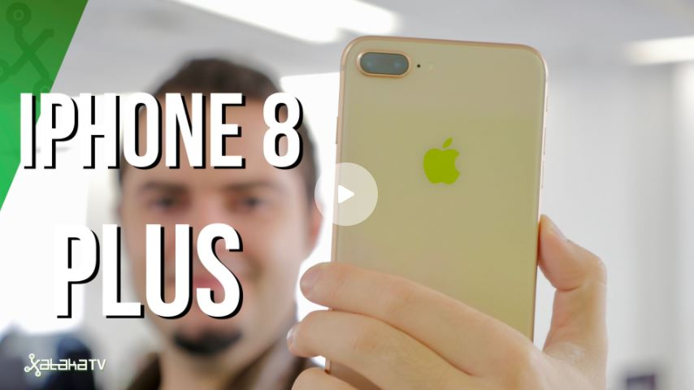
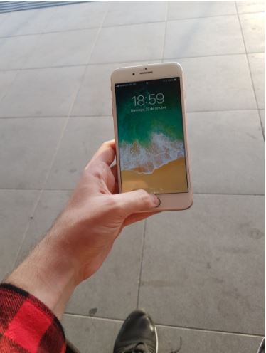
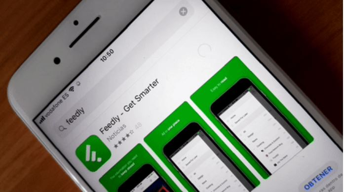
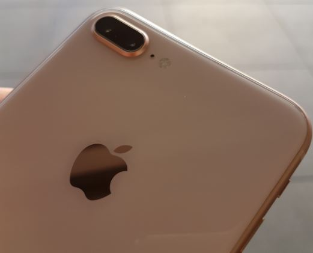
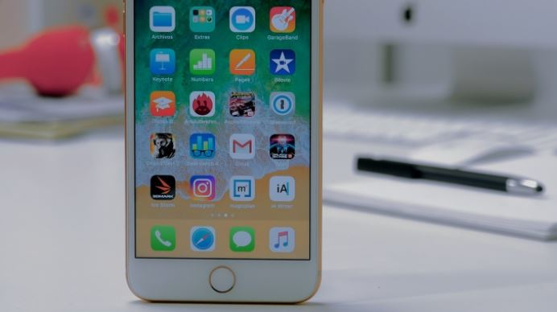

A falta de saber cómo de bien sale el experimento del iPhone X, Apple apostó por lo seguro con el iPhone 8 y 8 Plus. En realidad se trata de lo que podría haberse llamado "iPhone 7s", con las habituales mejoras en procesador y cámara, y con un diseño muy continuista respecto a su antecesor. Pero hasta el recién aterrizado iPhone X, los iPhone 8 y 8 Plus eran los smartphones más avanzados de Apple en el mercado. Tras el sobresaliente que tuvo el 8 Plus en nuestra review, ¿cómo le sienta el día a día? ¿Merece la pena pagar los más de mil euros que cuesta nuestra unidad o mejor esperar al iPhone X? ¿U optar por un iPhone 7? Vamos con nuestro mes de uso con el iPhone 8 Plus de 256 GB de almacenamiento.

No hace falta tenerlo mucho tiempo en la mano para darse cuenta del genial acabado y del diseño tan atractivo que tiene, a pesar de que esos marcos recuerden mucho a 2016. Por otro lado, "esos marcos de los que usted me habla" son los que permiten que siga existiendo el botón home con Touch ID en el frontal, algo que ha desaparecido (y ya veremos cómo resulta) en el iPhone X. El cristal empleado en la parte posterior hacen que tenga una superficie muy agradable al tacto, aunque da cierto respeto. Tienes la sensación tener algo frágil en la mano, pero después de meterlo y sacarlo bastante del bolsillo no he detectado ni un rasguño. De hecho, creo que es justo por el cristal por lo que tiene mejor agarre que el iPhone 7 Plus.

Hablemos de los WTF del iPhone 8 Plus Dudo que la persona que se gasta 1089 euros en un teléfono quiera enfrentarse a los WTF de este iPhone 8 Plus. A saber: La carga es soberanamente lenta. Dos horas y media si quieres carga entera. En media hora se consigue en torno a un 20% de recarga, una cifra ridícula si comparamos con terminales con una buena carga rápida. Lo peor es que no es culpa del iPhone, sino del raquítico cargador de 5 W que Apple incluye en junto al teléfono. En otras palabras: si quieres que tu iPhone nuevo tenga una tasa de carga medianamente rápida, tendrás que pasar por caja de nuevo y comprar un cargador con más potencia. Errores de software. Vale que iOS 11 está en continuo desarrollo y que lleva poco más de un mes en el mercado, pero si justo el ecosistema de Apple es uno de sus puntos fuertes debería estar todo mucho más cuidado. Aparte de algún cuelgue de aplicación esporádico, cuando peor lo pasé fue instalando aplicaciones desde la App Store. Debió de ser algún tipo de bug, pero al darle a "Obtener" a casi cualquier aplicación, el resultado era una bola de carga infinita que no llevaba a ningún lado. No había problemas de conexión y reconoció la autentificación a través de la huella sin problemas. ¿Qué pasó? No lo sé, pero tuve que resetear de fábrica el iPhone después de varios días intentando solucionar el problema. Alguien que se ha gastado más de mil euros seguro que tendría menos paciencia que yo. Aquí un gif con la bola infinita de carga:

La cámara marca la diferencia
Lo que sin duda me ha gustado más del iPhone 8 Plus es su doble cámara. El zoom 2x necesita de buena luz para funcionar bien, pero el resultado es genial. El modo retrato y los nuevos modos de iluminación son una pasada, aunque necesitas cierto tino para conseguir que la persona que fotografíes no quede sin oreja o que el fondo no se coma una prenda, un hombro, etc.

Los niveles de distorsión en el Galaxy S7 hacen realmente incómoda la escucha, pero en el caso del iPhone 8 Plus el resultado es casi profesional. Y eso que la canción que grabé con el iPhone era más cañera (por tanto, susceptible de más distorsión) que la que capturé con el S7. Y hablando de conciertos, donde las condiciones de luz no siempre son las mejores para fotos con móviles, aquí un ejemplo de lo conseguido con zoom 2x:
Eso sí, en el mercado hay alternativas Android que son al menos equiparables en prestaciones y son muy interesantes en precio. Pero si lo que quieres es tener el mejor iPhone del momento, yo me esperaría a ver qué tal el iPhone X. En el hipotético caso de que aquello salga mal, iPhone 8 u 8 Plus son para ti.
